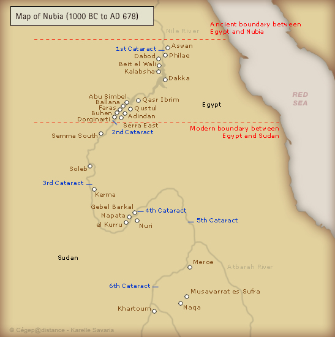

Slavery in Africa
What would motivate one group of people to force another into slavery? The desire to dominate and feelings of prejudice are part of the answer, but financial gain always played a significant role in the perpetration of slavery over the course of history. Indeed, slavery was a common practice in many parts of the world long before it started in the New World in the 16th century. In the following cards, you will learn about the slave trade within Africa itself.
What would motivate one group of people to force another into slavery? The desire to dominate and feelings of prejudice are part of the answer, but financial gain always played a significant role in the perpetration of slavery over the course of history. Indeed, slavery was a common practice in many parts of the world long before it started in the New World in the 16th century. In the following cards, you will learn about the slave trade within Africa itself.
Wars in Northwest Africa
In 146 BC, the Romans conquered the Punic city of Carthage (situated near today's Tunis) and renamed it Africa, a name that would eventually be given to the surrounding province. The city became a centre of Christian faith and economic trade: situated at one end of the Trans-Saharan Trade Network, it received goods from West Africa, mostly gold, ivory, and slaves.
In AD 711, the Arab conquerers regained control of North Africa and started to convert its population to Islam. Three centuries after this cultural shift, Muslim North Africans launched holy wars on non-Islamic West African kingdoms like Ghana. To develop their newly acquired land, the Muslims conquered and enslaved African peoples. The slaves consisted mainly of prisoners of war, who were eventually converted to Islam by their masters. After West Africa's conversion to Islam, regular routes were developed in the Trans-Saharan Trade Network. Apart from resources like gold and salt, slaves were also traded. Women were sent to North Africa to live in harems or to be domestic workers; men were sold as soldiers or manual workers in West Africa.
Sources:
"Trans-Saharan Trade." Wikipedia, The Free Encyclopedia. Wikimedia Foundation, Inc., 29 Oct. 2009. Web. 31 Mar. 2009.
Trotter, Joe William, Jr. The African American Experience. Boston: Houghton Mifflin Company, 2001. Print.
Trans-Saharan Trade Network
Like any society, the people living in the Saharan region of North Africa depended on trade for their survival. Even before the desertification of the Saharan region, the local agricultural communities engaged in trade. At the time of Egypt's Old Kingdom, a trade route across the Sahara was used to transport agricultural products and gold. Later, Romans used this route to transport goods between Egypt and Nubia.
Around AD 300, the use of camels transformed the Trans-Saharan Trade Network into an international resource. Camels could travel longer and further, so trade began with the Mediterranean region, which initiated the exchange of goods with Europe.
People were also traded on this market. Between AD 900 and AD 1400, after regular trade routes were set following the spread of Islam in West Africa, approximately 3.4 million captives entered the slave market. Among them were prisoners captured in war, women forced into harems, and children sold as domestic help.
The slave trade, like the rest of the trans-Saharan trade, was controlled by Africans and Arabs. In fact, in addition to black African slaves, white Europeans were also captured, bound into slavery, and sold to Muslim households or European plantations.
Sources:
"Arab Slave Trade." Wikipedia, The Free Encyclopedia. Wikimedia Foundation, Inc., 2 Nov. 2009. Web. 31 Mar. 2009.
Trotter, Joe William, Jr. The African American Experience. Boston: Houghton Mifflin Company, 2001. Print.
African Civilizations
The media today often associates Africa with poverty, war, disease, and drought. The abuse by white colonists is also very well documented. You can certainly guess that Africa is much more than that, and that there are many fascinating and positive aspects to its history. Africans have been victims, but they have also been great builders. In the cards below, you will learn about the Saharan region and the rise of two great African civilizations: Ancient Egypt and Nubia.
The Sahara Desert and Ancient Egypt

{kind=link}
{kind=link}
{kind=link}
{kind=link}
The Saharan region in Africa was not always the desert we know today. Its climate varied between wet and dry for hundreds of thousands of years. Approximately 6000 years ago, the Sahara was a fertile region with numerous rivers that supported large populations.
But around 3400 BC, the wet climate moved south, leading to the progessive desertification of the region. Saharan peoples started migrating inland, along the Nile River. These small agricultural communities evolved into states and later into the Upper and Lower Kingdoms of Egypt.
Around 2850 BC, Upper and Lower Egypt united into one kingdom under King Menes, giving birth to a culture that would last three thousand years and fascinate humankind until today.
Sources:
Kröpelin, Stefan, et al. "Climate-Driven Ecosystem Succession in the Sahara: The Past 6000 Years." Science 320.5877 (2008): 765–768. Print.
Egyptian Kingdoms
{kind=link}
{kind=link}
During the period of the Egyptian kingdoms, the wealth of this nation developed quite extensively. The basis of Egyptian wealth was derived from the work of farmers, tradesmen, and slaves.
Slaves consisted mostly of captives of Nubian, Semetic, and Mediterranean backgrounds. Slavery was not dependent on race or skin colour. Rather, these slaves were usually captives of war or individuals who were sold into bondage. During this period, 10–13% of the total Egyptian population consisted of slaves.
Slaves were given a variety of laborious tasks ranging from housework to pyramid construction. For instance, under the direction of harsh taskmasters, these slaves were responsible for building over 70 pyramids. Some of these pyramids took over 20 years to construct. One historian described the slaves as being driven to the "extremity of misery" (Trotter 5).
Source:
Trotter, Joe William, Jr. The African American Experience. Boston: Houghton Mifflin Company, 2001. Print.
Nubia
{kind=link}

{kind=link}
From 1500 BC to 1000 BC, much of the Nubian race was under Egyptian bondage. During that time, they adopted the Egyptian language, religion, and writing.
Eventually, Nubians grew in power and wealth. This led to the development of a politically independent state known as Kush. In 730 BC, the Nubians invaded and conquered Egypt. Historians refer to this period as the 25th or Ethiopian dynasty.
In 678 BC, the Assyrian Empire invaded Kush, forcing the Nubians to move south to Meroe, known as Ethiopia today. There, the Nubians created a unique culture based on their Egyptian heritage, including a system of writing, a pantheon of gods, and a form of pyramid construction.
In AD 350, the kingdom of Askam invaded Meroe, and by AD 800, the Ethiopian empire disintegrated as the Muslims continued their assault. The Nubians appealed to Europe for help to drive out the invading forces. These early relations between Nubians and Europeans became the stepping stone to trade with Europe, including the transatlantic slave trade.
Although Nubia is a noteworthy example of African royalty, other African kingdoms ascended to power. These include the Kingdom of Ghana and Zimbabwe.
Source:
Trotter, Joe William, Jr. The African American Experience. Boston: Houghton Mifflin Company, 2001. Print.
Peintres Antebellum ERA Stuuff.... Antebellum ERA Stuuff.... Antebellum ERA Stuuff.... Antebellum ERA Stuuff.... Antebellum ERA Stuuff.... Antebellum ERA Stuuff.... Antebellum ERA Stuuff.... Antebellum ERA Stuuff....Antebellum ERA Stuuff.... Antebellum ERA Stuuff.... Antebellum ERA Stuuff.... Antebellum ERA Stuuff....Antebellum ERA Stuuff.... Antebellum ERA Stuuff.... Antebellum ERA Stuuff.... Antebellum ERA Stuuff.... Antebellum ERA Stuuff.... Antebellum ERA Stuuff.... Antebellum ERA Stuuff.... Antebellum ERA Stuuff.... Antebellum ERA Stuuff.... Antebellum ERA Stuuff.... Antebellum ERA Stuuff.... Antebellum ERA Stuuff.... Antebellum ERA Stuuff.... Antebellum ERA Stuuff.... Antebellum ERA Stuuff.... Antebellum ERA Stuuff...
Peintres Antebellum ERA Stuuff.... Antebellum ERA Stuuff.... Antebellum ERA Stuuff.... Antebellum ERA Stuuff.... Antebellum ERA Stuuff.... Antebellum ERA Stuuff.... Antebellum ERA Stuuff.... Antebellum ERA Stuuff....Antebellum ERA Stuuff.... Antebellum ERA Stuuff.... Antebellum ERA Stuuff.... Antebellum ERA Stuuff....Antebellum ERA Stuuff.... Antebellum ERA Stuuff.... Antebellum ERA Stuuff.... Antebellum ERA Stuuff.... Antebellum ERA Stuuff.... Antebellum ERA Stuuff.... Antebellum ERA Stuuff.... Antebellum ERA Stuuff.... Antebellum ERA Stuuff.... Antebellum ERA Stuuff.... Antebellum ERA Stuuff.... Antebellum ERA Stuuff.... Antebellum ERA Stuuff.... Antebellum ERA Stuuff.... Antebellum ERA Stuuff.... Antebellum ERA Stuuff...
Peintres Antebellum ERA Stuuff.... Antebellum ERA Stuuff.... Antebellum ERA Stuuff.... Antebellum ERA Stuuff.... Antebellum ERA Stuuff.... Antebellum ERA Stuuff.... Antebellum ERA Stuuff.... Antebellum ERA Stuuff....Antebellum ERA Stuuff.... Antebellum ERA Stuuff.... Antebellum ERA Stuuff.... Antebellum ERA Stuuff....Antebellum ERA Stuuff.... Antebellum ERA Stuuff.... Antebellum ERA Stuuff.... Antebellum ERA Stuuff.... Antebellum ERA Stuuff.... Antebellum ERA Stuuff.... Antebellum ERA Stuuff.... Antebellum ERA Stuuff.... Antebellum ERA Stuuff.... Antebellum ERA Stuuff.... Antebellum ERA Stuuff.... Antebellum ERA Stuuff.... Antebellum ERA Stuuff.... Antebellum ERA Stuuff.... Antebellum ERA Stuuff.... Antebellum ERA Stuuff...